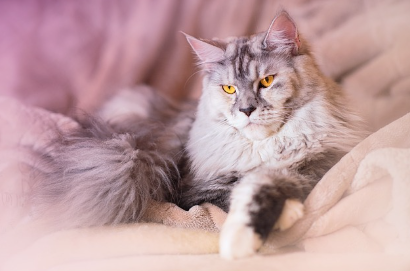

Ласкаво просимо на наш сайт про котиків
Ми раді бачити вас у світі, де панують муркотіння, пухнасті лапки та море ніжності! Наш сайт створений для всіх, хто обожнює котиків і хоче дізнатися про них більше.
Інформація про породи котів
Сіамська кішка
-
Зовнішність: Сіамські коти мають струнке тіло, витончені лапи і характерні великі вуха.
Їхня
коротка
шерсть найчастіше біла або кремова з темними відмітинами на морді, вухах, лапах і хвості.
-
Характер: Це дуже товариські і голосні коти, які люблять бути в центрі уваги. Вони
активно
взаємодіють
зі своїми власниками, а також потребують багато уваги.
-
Догляд: Проста у догляді завдяки короткій шерсті, яка не потребує частого розчісування.
Проте,
через
свою енергійність, сіамські коти потребують регулярної гри та активності.
Британська короткошерста
-
Зовнішність: Коти цієї породи відомі своїм круглим обличчям, великими очима і плюшевою
шерстю.
Вони мають міцну статуру і можуть бути різних кольорів, найпопулярніший з яких — блакитний.
-
Характер: Британські короткошерсті відомі своєю спокійною і врівноваженою натурою. Вони
добре
ладнають з дітьми та іншими тваринами, проте не надто люблять активні ігри.
-
Догляд: Незважаючи на густу шерсть, доглядати за ними досить легко. Рекомендується
розчісувати їх
один-два рази на тиждень, щоб уникнути заплутування шерсті.
Мейн-кун

-
Зовнішність: Це одна з найбільших порід домашніх котів, що має довгу пухнасту шерсть,
великі
лапи
і характерний хвіст. Вони мають сильну мускулатуру та виразні, часто золоті очі.
-
Характер: Мейн-куни — дружні, грайливі і лагідні коти. Вони добре ладнають з дітьми та
іншими
тваринами, часто проявляють цікавість і розум.
-
Догляд: Через довгу шерсть потребують регулярного розчісування (2-3 рази на тиждень) для
запобігання утворенню ковтунів. Їм також необхідно забезпечити активне середовище для гри.
Сфінкс

-
Зовнішність: Сфінкси — це коти без шерсті, які мають гладку і м'яку шкіру з характерними
зморшками. Їхні
великі вуха і виразні очі надають їм унікального вигляду.
-
Характер: Дуже ласкаві, товариські та цікаві. Сфінкси часто шукають людське тепло і
компанію,
люблять
обійматися і знаходяться поруч зі своїм власником.
-
Догляд: Через відсутність шерсті потребують особливого догляду за шкірою — регулярне
купання
і очищення
вух. Важливо стежити за температурним режимом, оскільки вони чутливі до холоду.
Бенгальська кішка
-
Зовнішність: Бенгальці мають вражаючу плямисту або мармурову шерсть, що нагадує дику
кішку. Вони
стрункі, з мускулистим тілом і виразними очима.
-
Характер: Активні, грайливі і дуже допитливі. Вони люблять воду і часто можуть гратися в
неї.
Бенгальці також потребують багато уваги і розваг.
-
Догляд: Незважаючи на коротку шерсть, ці коти потребують регулярного догляду. Важливо
забезпечити їм
багато іграшок і можливість активного дозвілля.
Поради по догляду за котами
Догляд за котом — це не лише задоволення, але й велика відповідальність. Щоб ваш пухнастий улюбленець завжди залишався здоровим і щасливим, важливо дотримуватися кількох основних правил догляду.
- Збалансоване харчування
- Вибір корму: Підберіть високоякісний корм, відповідний віку, породу та здоров'ю вашого кота. Сухий корм краще поєднувати з вологим, щоб забезпечити баланс поживних речовин і уникнути проблем з травленням.
- Режим годування: Встановіть регулярний графік годування. Для дорослих котів зазвичай достатньо двох прийомів їжі на день. Слідкуйте, щоб тварина мала постійний доступ до свіжої води.
- Догляд за шерстю
- Регулярне розчісування: Частота залежить від довжини шерсті кота. Довгошерстих котів потрібно розчісувати щодня, щоб уникнути утворення ковтунів, а короткошерстих — один-два рази на тиждень.
- Купання: Купати котів слід лише за необхідністю, використовуючи спеціальні шампуні. Занадто часте купання може пошкодити природний захисний шар шкіри.
- Догляд за зубами
- Регулярна чистка: Чистіть зуби коту спеціальною щіткою та пастою для тварин. Це допоможе уникнути накопичення зубного нальоту і карієсу.
- Спеціальні ласощі: Використовуйте жувальні ласощі або іграшки, які допомагають очищати зуби від нальоту.
- Догляд за кігтями
- Обрізка кігтів: Регулярно обрізайте кігті, щоб вони не стали занадто довгими і не заважали тварині. Використовуйте спеціальні ножиці для кігтів і будьте обережні, щоб не пошкодити кровоносні судини.
- Кігтеточка: Забезпечте кота кігтеточкою, щоб він міг сточувати кігті самостійно. Це також допоможе зберегти ваші меблі цілими.
- Догляд за вухами і очима
- Очищення вух: Регулярно перевіряйте стан вух. Якщо помітите накопичення бруду або воску, обережно очистіть їх ватним тампоном, змоченим спеціальним засобом для чищення.
- Догляд за очима: Протирайте очі кота вологою серветкою, якщо помітите виділення або сльози. Якщо виділення надмірні, зверніться до ветеринара.
- Гігієна та здоров'я
- Регулярні огляди у ветеринара: Відвідуйте ветеринара не менше одного разу на рік для планового огляду та вакцинації. Це допоможе вчасно виявити і попередити можливі захворювання.
- Антигельмінтна профілактика: Проводьте дегельмінтизацію вашого кота кожні три місяці, навіть якщо він не виходить на вулицю.
- Психологічний комфорт
- Ігри та увага: Виділяйте час для ігор з котом, щоб підтримувати його фізичну активність і запобігати нудьзі. Коти дуже соціальні і потребують уваги.
- Затишне місце: Забезпечте коту тихе і затишне місце для відпочинку, де він може почуватися в безпеці.
Цікаві факти
- Коти — справжні спритники
- Муркотіння — не завжди ознака щастя
- Коти мають унікальний «носовий відбиток»
- Коти бачать у темряві
- Коти сплять більшу частину життя
- Котяча мова тіла
- Коти не відчувають солодкого
- Котяче бурчання може лікувати
- Найдовше життя кота
- Коти — відмінні мисливці
Коти здатні стрибати на висоту, яка в п'ять разів перевищує довжину їхнього тіла. Це можливо завдяки їхнім сильним заднім лапам, які надають їм надзвичайну пружність.
Хоча муркотіння зазвичай асоціюється з задоволенням, коти можуть муркотіти також, коли вони налякані, нервують або відчувають біль. Це своєрідний спосіб самозаспокоєння.
Носові подушечки котів мають унікальний візерунок, подібно до відбитків пальців у людей. Жоден котячий ніс не повторюється, тому кожен кіт унікальний.
Коти можуть бачити в шість разів краще за людей у слабкому освітленні. Це пов’язано з тим, що їхні очі мають більшу кількість світлочутливих клітин — паличок, які допомагають бачити у темряві.
Коти — справжні любителі сну, вони можуть спати до 16 годин на день. За все життя середньостатистичний кіт проводить уві сні близько 70% свого часу.
Хвіст кота може багато розповісти про його настрій. Якщо він піднятий догори, кіт щасливий і впевнений у собі. Якщо хвіст тремтить — це ознака сильної радості. А коли хвіст занизький або притиснутий — кіт може відчувати страх чи дискомфорт.
Коти є одними з небагатьох ссавців, які не мають рецепторів для смаку солодкого. Це пояснюється тим, що їхній раціон у дикій природі складається переважно з м’яса, і тому вони не потребують вуглеводів.
Частота муркотіння котів коливається від 25 до 150 Гц, що, як вважається, сприяє загоєнню кісток і тканин. Це одна з причин, чому коти можуть так швидко відновлюватися після травм.
Найдовше задокументоване життя кота належить коту на ім'я Крим Пафф з Техасу, який прожив 38 років і 3 дні. Це набагато більше, ніж середній вік кота, який становить 12-15 років.
Навіть домашні коти зберігають свої мисливські інстинкти. Вони можуть витрачати години на спостереження за птахами або комахами, і навіть гратися зі здобиччю перед тим, як зловити її.
Фотогалерея